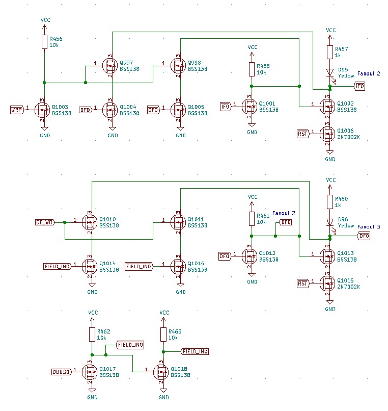
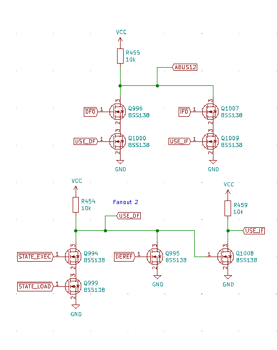

The memory extension device allows the Q2 to support more than 4096 words of memory. This is accomplished by dividing memory into "fields" (a term borrowed from the PDP-8, which uses a similar mechanism). The Q2 uses two additional latches to accomplish this: the data field (DF) and the instruction field (IF). Conceptually, these latches could each support multiple bits, but in the current implementation only two fields (each a 1 bit latch) are used. The latches have the following structure:
Software can set the data field by writing to the I/O address (0xFFF). The instruction field is then set from the data field when a jump takes place.
The field used for accessing memory is determined by the current state and the dereference bit:
Thus, instruction fetches and direct accesses use the instruction field and indirect accesses use the data field. This allows software to move data between fields and optionally jump to the other field by executing a jump with the data field set to the desired field.
This mechanism is very similar to the PDP-8, but the PDP-8 has a slightly more complex mechanism. Rather than copy the data field to the instruction field, the PDP-8 allows software to set the next instruction field and then copies the next instruction field to the instruction field after a jump. The simplified Q2 mechanism saves a latch and decoding logic without sacrificing functionality.
Here is a small example of how this could be used to copy code to another field and execute it there.
; Copy "prog" to field 1 lda #prog_start sta src_ptr lea =0 sta target_ptr lda #prog_end - prog_start copy_loop: add #-1 sta remaining ; Load source byte. lda @src_ptr sta temp ; Set DF=1 lda #0xC01 sta @#-1 ; Store to target. lda temp sta @target_ptr ; Set DF=0 lda #0xC00 sta @#-1 ; Next source byte lea =1 add src_ptr sta src_ptr ; Next target byte. lea =1 add target_ptr sta target_ptr lda remaining jfc copy_loop ; Jump to field 1. lda #0xC01 sta @#-1 jmp =0 temp: .dw 0 remaining: .dw 0 src_ptr: .dw 0 target_ptr: .dw 0 ; A small program to execute in field 1. prog_start: lea =45 sta @3 jmp 2 .dw -1 prog_end:
< RAM